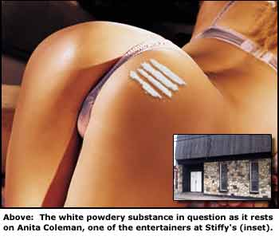

|

As the nation is on a heightened state of security following bio-terrorism threats all over the country, a local establishment is feeling the effects as well. The well known Pittsburgh erotic dance club, Stiffy’s, in McKees Rocks, was closed last Friday after a questionable white powder was found on the bare buttocks of one of the club’s performers. The powder was discovered by bar patron James Morris as he walked into one of the private dance areas and discovered stripper Anita Coleman, 24, of Bethel Park, bending over for a client.
“I thought nothing of this scene until I saw [Ms. Coleman’s] [expletive] flying in the air. And normally I wouldn’t think anything of that either, except there was a weird white powdery substance on her [expletive]. It was strange too. The dude with her looked like he was bending over towards the substance, perhaps to eat it. I figured the man must be delusional. I didn’t want to take any chances, especially with all the Anthrax cases out there, so I got out my cell phone and called the police,” recalled Morris.
Police immediately responded to the call and notified the Southwestern Pennsylvania division of the FBI. Officers Steven R. Johnson and Melvin T. Jones arrived on the scene to find the “powdery substance” had mysteriously disappeared from the stripper’s posterior. The policeman followed procedure by dusting for trace amounts of the reported substance, but broke from procedure by tipping the stripper three one dollar bills for the experience.
“We have no idea what happened to the substance in question," Officer Johnson reported. "We cannot say for sure whether it was Anthrax or not, but [we] followed protocol in closing down the business. We searched and searched for more of the substance and could find none except for trace amounts of the questionable substance on the inner wall of the establishment’s toilet. So far lab results are inconclusive.”
Stiffy’s has since reopened and has reported normal business profits.
“Ain’t no scare gonna keep me away from Tuesday night when my girl Missy is dancing,” Stiffy’s regular Lonny Stilley reported. "I’ll have to be on my death bed before I stop coming down Stiffy’s. Me and my brother hang out here all the time and there ain’t no changing that."
Coleman has refused to talk about the incident, and the man who was reportedly with her at the time of the discovery has not been located. Police are looking into his identity, and have increased the frequency of their Stiffy’s beat patrol.
|